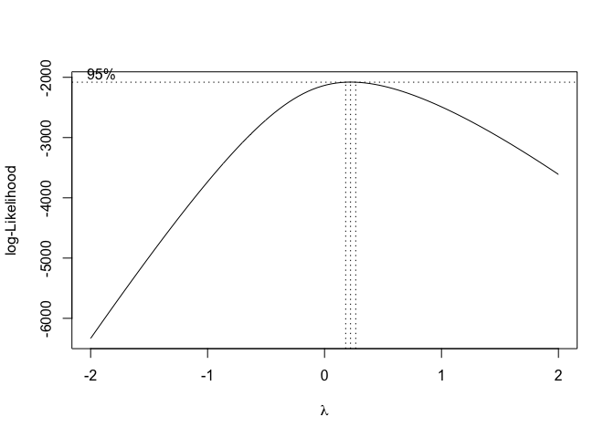
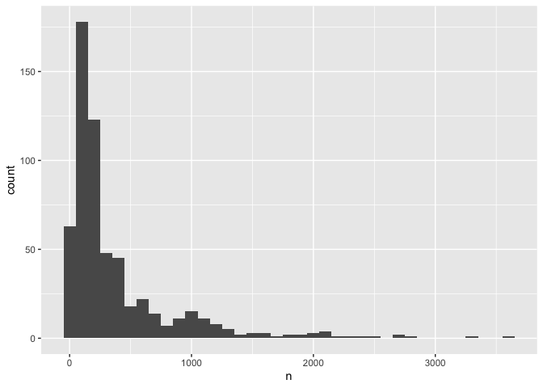

path2data <- paste0(
"/Users/nguyenpnt/Library/CloudStorage/OneDrive-OxfordUniversityClinicalResearchUnit/Data/HFMD/cleaned/"
)
# Name of cleaned HFMD data file
cases_file <- "hfmd_hcdc.rds"
df_cases <- paste0(path2data, cases_file) |>
readRDS()5 Forecasting model
5.1 Data path
5.2 Library
Required packages:
required <- c("BART",
"tidyverse",
"forecast",
"MASS",
"magrittr",
"parallel",
"lubridate",
"tseries")Installing those that are not installed yet:
to_install <- required[!required %in% installed.packages()[, "Package"]]
if (length(to_install))
install.packages(to_install)Loading the packages for interactive use:
invisible(sapply(required, library, character.only = TRUE))5.3 Function
plot bart function
model_plot_w <- function(data) {
data |>
ggplot(aes(x = adm_week)) +
geom_point(
data = data |> dplyr::select(-week_run),
aes(y = n),
alpha = 0.4,
size = .2
) +
geom_line(aes(y = pred_t)) +
geom_ribbon(
aes(ymin = y_lower95, ymax = y_upper95),
fill = "#4A90D9",
alpha = 0.15,
na.rm = TRUE
) +
# Shaded 80% credible interval
geom_ribbon(
aes(ymin = y_lower80, ymax = y_upper80),
fill = "#4A90D9",
alpha = 0.25,
na.rm = TRUE
) +
scale_x_date(name = "Admission week") +
scale_y_continuous(name = "Total cases") +
theme_bw() +
facet_wrap(~ week_run, ncol = 6)
}function to run bart model to forecast 2023 data
cores <- detectCores() - 1
run_bart_month <- function(w, hfmd_data,y) {
# hfmd_data <- hfmd_1324
# y = 2023
# w = 39
train_data <- hfmd_data |>
filter(year < y | (year == y & week == w)) |>
data.frame() |>
na.omit()
test_data <- hfmd_data |>
filter(year == y & week %in% c(w+1,w+2,w+3)) |>
data.frame()
if (nrow(test_data) == 0)
return(NULL)
model <- wbart(
x.train = train_data[, c("adm_week", "lag_t.1","lag_t.2","lag_t.3")],
y.train = train_data$y_transformed,
# x.test = test_data[, c("adm_week", "lag_t.1", "lag_t.2")],
ntree = 1000,
ndpost = 10000,
nskip = 1000,
a = 0.95,
b = 2
)
pred_draws <- predict(model,test_data[, c("adm_week", "lag_t.1", "lag_t.2", "lag_t.3")])
pred_ori <- (pred_draws * lambda + 1)^(1 / lambda)
result <- test_data |>
mutate(
pred_t = colMeans(pred_ori),
y_lower95 = apply(pred_ori, 2, quantile, 0.025),
y_upper95 = apply(pred_ori, 2, quantile, 0.975),
y_lower80 = apply(pred_ori, 2, quantile, 0.10),
y_upper80 = apply(pred_ori, 2, quantile, 0.90),
week_run = w,
year_run = y
)
return(result)
}Function to run ARIMA model
run_arima_week <- function(w, y, hfmd_data, lambda) {
# i = 1
# w = year_week_grid$w[i]
# y = year_week_grid$y[i]
# hfmd_data = hfmd_1324
# lambda = lambda
# Expanding window training data
train_data <- hfmd_data |>
dplyr::filter(year < y | (year == y & week < w)) |>
data.frame() |>
na.omit()
# Test = 3 weeks ahead from week w
test_data <- hfmd_data |>
dplyr::filter(year == y & week >= w & week <= w + 2) |>
data.frame()
if (nrow(test_data) == 0 | nrow(train_data) < 10) return(NULL)
# Convert training to time series object
ts_train <- ts(train_data$y_transformed, frequency = 52)
# Fit auto ARIMA with tryCatch
model <- auto.arima(ts_train)
if (is.null(model)) return(NULL)
# Fix 1: forecast exactly nrow(test_data) steps, not always 3
h <- nrow(test_data)
fc <- forecast(model, h = h, level = c(80, 95))
# Fix 2: safely back-transform with InvBoxCox instead of manual formula
# handles edge cases like lambda = 0 (log transform)
result <- test_data |>
mutate(
pred_t = as.numeric(InvBoxCox(fc$mean, lambda)),
y_lower95 = as.numeric(InvBoxCox(fc$lower[, "95%"], lambda)),
y_upper95 = as.numeric(InvBoxCox(fc$upper[, "95%"], lambda)),
y_lower80 = as.numeric(InvBoxCox(fc$lower[, "80%"], lambda)),
y_upper80 = as.numeric(InvBoxCox(fc$upper[, "80%"], lambda)),
horizon = row_number(),
week_run = w,
year_run = y
)
return(result)
}5.4 Analysis
hfmd_1324 <- df_cases %>%
mutate(adm_week = as.Date(floor_date(admission_date, "week"))) %>%
group_by(adm_week) %>%
dplyr::count() %>%
ungroup() %>%
mutate(
x = 1:nrow(.),
week = week(adm_week),
month = month(adm_week),
year = year(adm_week)
) %>%
rename(time = x)I applied Box-cox transformation to normalize the count data
bc <- boxcox(n ~ adm_week,data = hfmd_1324)
lambda <- bc$x[which.max(bc$y)]Add transformed cases and lag 1-week term
hfmd_1324 %<>%
mutate(
y_transformed = ((n^lambda - 1) / lambda),
lag_t.1 = lag(y_transformed,1),
lag_t.2 = lag(y_transformed,2),
lag_t.3 = lag(y_transformed,3)
)Before transform:
hfmd_1324 |>
ggplot(aes(n))+
geom_histogram(binwidth = 100)
After transform:
hfmd_1324 |>
ggplot(aes(y_transformed))+
geom_histogram(binwidth = .5)
5.5 BART model
First, I used data from 2013 to 2022 for training and using 2023 for testing. Then I combined 2013-2022 data with each lag of 3 weeks in 2023 to see the prediction 3 weeks ahead
# year_week_grid <- expand.grid(y = c(2023), w = 1:52)
#
# results_list <- mclapply(
# X = 1:nrow(year_week_grid),
# FUN = function(i) {
# run_bart_month(
# w = year_week_grid$w[i],
# y = year_week_grid$y[i],
# hfmd_data = hfmd_1324
# )
# },
# mc.cores = cores
# )
# pred_3w <- bind_rows(results_list,.id = "id")
# save(pred_3w,file = "pred_3w.RData")
load("pred_3w.RData")week 1-26
pred_3w |>
filter(week_run <= 26) |>
model_plot_w()
week 27-52
pred_3w |>
filter(week_run > 26) |>
model_plot_w()
5.6 ARIMA model
ARIMA assume data is stationary. A time series is considered stationary if its statistical properties, such as mean and variance, remain constant over time.
I used adf and kpss test for stationary testing of hfmd time-series data. For ARIMA model, I used data from 2012-2022 for training.
train_data <- hfmd_1324 |>
dplyr::filter(year < 2023 | (year == 2023 & week < 1)) |>
data.frame() |>
na.omit()First I used number of admission for stationary testing. There are 2 test for stationary testing
adf test, null hypothesis: The time series has a unit root, meaning it is non-stationary.
kpss test, null hypothesis: The series is stationary
Create a time-series
ts_train <- ts(train_data$n, frequency = 52)adf test
adf.test(ts_train) ## can reject the null hypothesis
Augmented Dickey-Fuller Test
data: ts_train
Dickey-Fuller = -4.5366, Lag order = 8, p-value = 0.01
alternative hypothesis: stationarykpss test
kpss.test(ts_train) ## can reject the null hypothesis
KPSS Test for Level Stationarity
data: ts_train
KPSS Level = 0.64106, Truncation lag parameter = 6, p-value = 0.0189Usually, there should be a contrast between those 2 test for stationary. If a data is stationary when p-value of adf test < 0.05 and kpss test > 0.05. So the results above state the non-stationary, then I applied the box-cox transformation for the time-series data and retest.
ts_train_t <- ts(train_data$y_transformed, frequency = 52)
adf.test(ts_train_t)
Augmented Dickey-Fuller Test
data: ts_train_t
Dickey-Fuller = -4.3587, Lag order = 8, p-value = 0.01
alternative hypothesis: stationarykpss.test(ts_train_t)
KPSS Test for Level Stationarity
data: ts_train_t
KPSS Level = 0.30265, Truncation lag parameter = 6, p-value = 0.1So I used the box-cox transformation for model
# # Explicit cluster setup
# cl <- makeCluster(cores)
#
# # Export everything the workers need
# clusterExport(cl, varlist = c("run_arima_week", "hfmd_1324",
# "lambda", "year_week_grid"))
#
# # Load packages on each worker
# clusterEvalQ(cl, {
# library(forecast)
# library(dplyr)
# })
#
# # Run
# sarima_results_list <- parLapply(
# cl = cl,
# X = 1:nrow(year_week_grid),
# fun = function(i) {
# tryCatch(
# run_arima_week(
# w = year_week_grid$w[i],
# y = year_week_grid$y[i],
# hfmd_data = hfmd_1324,
# lambda = lambda
# ),
# error = function(e) return(NULL)
# )
# }
# )
#
# # Always stop cluster when done
# stopCluster(cl)
#
# results_arima <- bind_rows(sarima_results_list)
# save(results_arima,file = "results_arima.RData")
load("results_arima.RData")Week 1-26
results_arima |>
filter(week_run <= 26) |>
model_plot_w()
Week 27-52
results_arima |>
filter(week_run > 26) |>
model_plot_w()